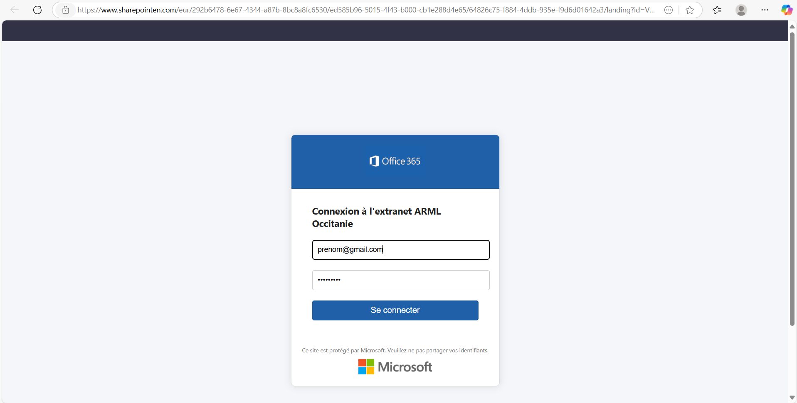
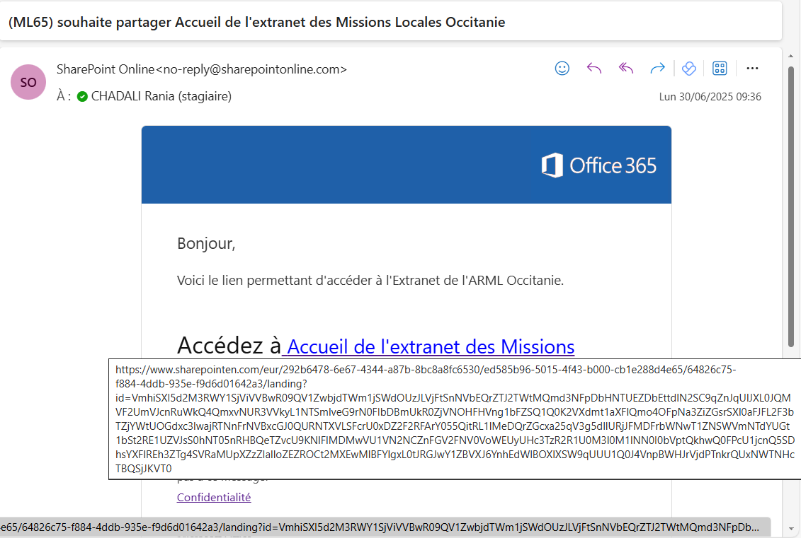

🎯 Ceci était un test : vous avez été piégé… pour mieux vous protéger !
🔐 Ce message faisait partie d’un exercice de sensibilisation à la cybersécurité.
Il s’agissait d’une simulation d’hameçonnage destinée à vous aider à reconnaître les tentatives de phishing.
Pas d’inquiétude : aucune action malveillante n’a été réalisée.
Découvrez ci-dessous comment repérer ce type d’attaque et renforcer votre vigilance.
📧 Indices d’un email frauduleux
- 🔎 Adresse e-mail suspecte : Exemple : support@m1crosoft.com
- ❗ Demande urgente ou menaçante pour agir rapidement
- 📁 Pièces jointes inattendues ou douteuses
- 🖋️ Fautes d’orthographe ou de grammaire inhabituelles
- 🌐 Lien inconnu ou raccourci (ex: bit.ly/...)
- Demandes d’informations sensibles — Aucun service légitime ne vous demandera vos mots de passe, numéros de carte bancaire ou codes de sécurité par e-mail.
🔗 Comment vérifier un lien ?
- 👀 Passez la souris dessus (sans cliquer) pour afficher l’URL réelle
- 🛑 Méfiez-vous des adresses similaires ou proches (ex: login-microsoft.co)
- ✅ Les sites fiables utilisent https:// et un certificat valide
✅ Que faire si vous avez un doute ?
- 🚫 Ne cliquez pas et ne répondez pas
- 📤 Signalez-le à votre service informatique
- 📞 Vérifiez auprès de l’expéditeur si vous avez un doute
🔍 Analyse pédagogique : Signes d’un hameçonnage
Ci-dessous, vous trouverez une analyse des éléments frauduleux identifiés dans les captures d’écran. Cette démonstration vous aide à comprendre les signes typiques d’une tentative de phishing.

📌 Image 1 : Faux portail Microsoft
- L'URL n'est pas officielle.
- La page est trop générique.
- Le logo ou les polices peuvent être légèrement différents.

📌 Image 2 : Simulation d’activation de compte
- Un faux sentiment d'urgence.
- Une URL non sécurisée ou inconnue.
Note : Cette page est une démonstration pédagogique. Ne communiquez jamais vos identifiants à des pages web dont vous doutez, même si elles paraissent crédibles.